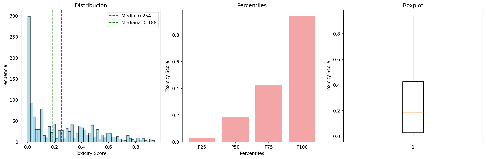

Análisis de Tweets Ecuatorianos con Medición de Toxicidad
Author
Omar Velez
Introducción
Proyecto final de Aprendizaje de Maquina Autor Omar Vele
Importar librerías
Code
# Importaciones corregidas para análisis de textoimport pandas as pdimport numpy as npimport matplotlib.pyplot as pltimport seaborn as snsfrom sklearn.model_selection import train_test_splitfrom sklearn.feature_extraction.text import TfidfVectorizer, CountVectorizerfrom sklearn.preprocessing import StandardScaler, LabelEncoderfrom sklearn.compose import ColumnTransformer # Corrección aquífrom sklearn.pipeline import Pipelinefrom sklearn.ensemble import RandomForestClassifier, RandomForestRegressorfrom sklearn.linear_model import LogisticRegression, LinearRegressionfrom sklearn.cluster import KMeansfrom sklearn.metrics import classification_report, confusion_matrix, mean_squared_error, r2_scorefrom sklearn.ensemble import RandomForestClassifierfrom sklearn.linear_model import LogisticRegressionfrom sklearn.svm import SVCfrom sklearn.naive_bayes import MultinomialNBfrom sklearn.metrics import accuracy_score, precision_score, recall_score, f1_score, roc_auc_scorefrom sklearn.metrics import classification_report, confusion_matrix, roc_curve, auc## Borrar OJOimport reimport warningswarnings.filterwarnings('ignore')from wordcloud import WordCloud # Esta importación faltaba# Importar NLTK y definir stopwordsimport nltkfrom nltk.corpus import stopwords# Descargar stopwords en español (solo ejecutar una vez)nltk.download('stopwords')
True
Cargar dataset
Code
# Cargar el datasetdf = pd.read_csv('./1500_tweets_con_toxicity.csv')
1. Análisis Exploratorio de Datos (EDA)
1.1 Información general del dataset
Code
print(f"Número de filas: {df.shape[0]}")print(f"Número de columnas: {df.shape[1]}")print("\n=== TIPOS DE DATOS")print(df.dtypes)print("\n=== INFO")df.info()
1.4 Análisis de la variable TOXICITY (toxicity_score)
Code
print(df['toxicity_score'].describe())# Visualizar distribución de toxicidadfig, axes = plt.subplots(1, 3, figsize=(15, 5))# Histogramaaxes[0].hist(df['toxicity_score'].dropna(), bins=30, alpha=0.7, color='skyblue', edgecolor='black')axes[0].set_title('Distribución de Toxicidad')axes[0].set_xlabel('Toxicidad')axes[0].set_ylabel('Frecuencia')# Boxplotaxes[1].boxplot(df['toxicity_score'].dropna())axes[1].set_title('Boxplot de Toxicidad')axes[1].set_ylabel('Toxicidad')# Q-Q plotfrom scipy import statsstats.probplot(df['toxicity_score'].dropna(), dist="norm", plot=axes[2])axes[2].set_title('Q-Q Plot vs Normal')plt.tight_layout()plt.show()
count 1347.000000
mean 0.253879
std 0.243942
min 0.001940
25% 0.028444
50% 0.188392
75% 0.426917
max 0.939145
Name: toxicity_score, dtype: float64
1.5 Análisis de texto
Code
# Estadísticas de textodf['word_count'] = df['content'].astype(str).str.split().str.len()print("=== ESTADÍSTICAS DE TEXTO ===")print(f"Longitud promedio: {df['content_length'].mean():.2f} caracteres")print(f"Número promedio de palabras: {df['word_count'].mean():.2f}")# Visualizar longitud de textosfig, axes = plt.subplots(1, 2, figsize=(12, 5))axes[0].hist(df['content_length'], bins=30, alpha=0.7, color='lightgreen')axes[0].set_title('Distribución de Longitud de Texto')axes[0].set_xlabel('Número de Caracteres')axes[1].hist(df['word_count'], bins=30, alpha=0.7, color='salmon')axes[1].set_title('Distribución de Número de Palabras')axes[1].set_xlabel('Número de Palabras')plt.tight_layout()plt.show()# Nube de palabrastext_sample =' '.join(df['content'].dropna().sample(min(1000, len(df))).astype(str))# Limpiar texto para nube de palabrastext_clean = re.sub(r'http\S+|www\S+|@\w+|#\w+|\d+', '', text_sample)text_clean = re.sub(r'[^\w\s]', ' ', text_clean)wordcloud = WordCloud(width=800, height=400, background_color='white', max_words=100, colormap='viridis').generate(text_clean)plt.figure(figsize=(10, 5))plt.imshow(wordcloud, interpolation='bilinear')plt.axis('off')plt.title('Nube de Palabras')plt.show()
=== ESTADÍSTICAS DE TEXTO ===
Longitud promedio: 116.53 caracteres
Número promedio de palabras: 16.97
1.6 Análisis de variables categóricas
Code
categorical_to_analyze = [col for col in categorical_cols if df[col].nunique() <20and col !='content'][:4]if categorical_to_analyze: fig, axes = plt.subplots(2, 2, figsize=(15, 10)) axes = axes.ravel()for i, col inenumerate(categorical_to_analyze):if i <4: value_counts = df[col].value_counts().head(10) axes[i].bar(range(len(value_counts)), value_counts.values) axes[i].set_title(f'Distribución de {col}') axes[i].set_xticks(range(len(value_counts))) axes[i].set_xticklabels(value_counts.index, rotation=45, ha='right') plt.tight_layout() plt.show()
1.7 Correlaciones entre variables numéricas
Code
iflen(numeric_cols) >1:# Matriz de correlación correlation_matrix = df[numeric_cols].corr() plt.figure(figsize=(10, 8)) sns.heatmap(correlation_matrix, annot=True, cmap='coolwarm', center=0, square=True, fmt='.2f') plt.title('Matriz de Correlación de Variables Numéricas') plt.tight_layout() plt.show()# Top correlaciones con toxicidadif'toxicity_score'in numeric_cols: toxicity_corr = correlation_matrix['toxicity_score'].abs().sort_values(ascending=False)print(f"=== CORRELACIONES CON {'toxicity_score'.upper()} ===")print(toxicity_corr.head(10))
1.8 Hallazgos clave del EDA (Explicar de forma clara al menos 3 hallazgos clave del análisis)
Code
print("=== HALLAZGOS CLAVE DEL ANÁLISIS EXPLORATORIO")print("\n1. DISTRIBUCIÓN DE DATOS:")print(f" - Mi Set de datos tiene {df.shape[0]} observaciones y {df.shape[1]} variables")print(f" - Variables numéricas son: {len(numeric_cols)}")print(f" - Variables categóricas son: {len(categorical_cols)}")print(f"\n2. CALIDAD DE DATOS:")missing_summary = missing_df[missing_df['Valores_Nulos'] >0]iflen(missing_summary) >0:print(f" - Se detectaron valores nulos en {len(missing_summary)} columnas")print(f" - Columna con más nulos: {missing_summary.iloc[0]['Columna']} ({missing_summary.iloc[0]['Porcentaje']:.1f}%)")else:print(" - No se detectaron valores nulos en el dataset")print(f"\n3. VARIABLE OBJETIVO (Score de TOXICIDAD):")toxicity_mean = df['toxicity_score'].mean()toxicity_std = df['toxicity_score'].std()print(f" - Media de toxicidad: {toxicity_mean:.4f}")print(f" - Desviación estándar: {toxicity_std:.4f}")print(f" - La mayoría de tweets tienen baja toxicidad pues son menores a 0.5, la toxicidad media es: {toxicity_mean:.4f}" )
=== HALLAZGOS CLAVE DEL ANÁLISIS EXPLORATORIO
1. DISTRIBUCIÓN DE DATOS:
- Mi Set de datos tiene 1500 observaciones y 28 variables
- Variables numéricas son: 12
- Variables categóricas son: 15
2. CALIDAD DE DATOS:
- Se detectaron valores nulos en 4 columnas
- Columna con más nulos: hashtags (91.9%)
3. VARIABLE OBJETIVO (Score de TOXICIDAD):
- Media de toxicidad: 0.2539
- Desviación estándar: 0.2439
- La mayoría de tweets tienen baja toxicidad pues son menores a 0.5, la toxicidad media es: 0.2539
2. Preprocesamiento y Codificación
2.1 Limpieza de datos básica
Code
print("=== LIMPIEZA DE DATOS BÁSICA")df_processed = df[['content', 'toxicity_score']].copy()initial_rows =len(df_processed)df_processed = df_processed.dropna(subset=['toxicity_score', 'content'])final_rows =len(df_processed)# Verificar tipos de datosprint(f"\nTipos de datos:")print(f" - content: {df_processed['content'].dtype}")print(f" - toxicity_score: {df_processed['toxicity_score'].dtype}")
=== LIMPIEZA DE DATOS BÁSICA
Tipos de datos:
- content: object
- toxicity_score: float64
2.2 Procesamiento del texto (content)
Code
print("=== PROCESAMIENTO DEL CAMPO CONTENT")# Función simple de limpieza de textodef clean_text(text):if pd.isna(text):return"" text =str(text).lower()# Remover URLs, menciones, hashtags, ademas números y caracteres especiales text = re.sub(r'http\S+|www\S+', '', text) text = re.sub(r'@\w+', '', text) text = re.sub(r'#\w+', '', text) text = re.sub(r'\d+', '', text) text = re.sub(r'[^\w\s]', ' ', text) text =' '.join(text.split())return text# Aplicar limpiezadf_processed['content_clean'] = df_processed['content'].apply(clean_text)# Remover stopwords en españolspanish_stopwords =set(stopwords.words('spanish'))def remove_stopwords(text): words = text.split()return' '.join([word for word in words if word notin spanish_stopwords andlen(word) >2])# Crear texto procesado finaldf_processed['text_processed'] = df_processed['content_clean'].apply(remove_stopwords)print(f"Texto procesado:")
=== PROCESAMIENTO DEL CAMPO CONTENT
Texto procesado:
2.3 Codificación de texto con TF-IDF
Code
print("=== CODIFICACIÓN DE TEXTO CON TF-IDF")# Configurar TF-IDFtfidf_vectorizer = TfidfVectorizer( max_features=1000, min_df=2, max_df=0.8, ngram_range=(1, 2), stop_words=list(spanish_stopwords))# Aplicar TF-IDF al texto procesadoX_tfidf = tfidf_vectorizer.fit_transform(df_processed['text_processed'])print(f"Dimensiones de TF-IDF: {X_tfidf.shape}")# Mostrar términos más importantesfeature_names = tfidf_vectorizer.get_feature_names_out()print(f"Total de términos extraídos: {len(feature_names)}")print(f"Primeros 10 términos: {feature_names[:10]}")print(f"Últimos 10 términos: {feature_names[-10:]}")
=== CODIFICACIÓN DE TEXTO CON TF-IDF
Dimensiones de TF-IDF: (1347, 1000)
Total de términos extraídos: 1000
Primeros 10 términos: ['abre' 'abuso' 'acaba' 'acabar' 'acabar correismo' 'acaso' 'acciones'
'aceptan' 'aceptar' 'acuerdos']
Últimos 10 términos: ['zorra' 'zorro' 'zurda' 'zurdos' 'época' 'ósea' 'última' 'último' 'única'
'único']
=== DIVISIÓN DE DATOS
Distribución del target (toxicity_score):
Entrenamiento - Media: 0.2559
Std: 0.2449
Prueba - Media: 0.2457
Std: 0.2395
3. Clasificación de Toxicidad
3.1 Transformación de toxicity_score a variable categórica
Code
print("=== TRANSFORMACIÓN A VARIABLE CATEGÓRICA")plt.figure(figsize=(15, 5))# Histograma detalladoplt.subplot(1, 3, 1)plt.hist(df_processed['toxicity_score'], bins=50, alpha=0.7, color='skyblue', edgecolor='black')plt.axvline(df_processed['toxicity_score'].mean(), color='red', linestyle='--', label=f'Media: {df_processed["toxicity_score"].mean():.3f}')plt.axvline(df_processed['toxicity_score'].median(), color='green', linestyle='--', label=f'Mediana: {df_processed["toxicity_score"].median():.3f}')plt.xlabel('Toxicity Score')plt.ylabel('Frecuencia')plt.title('Distribución')plt.legend()# Percentilesplt.subplot(1, 3, 2)percentiles = [25, 50, 75, 100] ## relacionados a los quartilesperc_values = [np.percentile(df_processed['toxicity_score'], p) for p in percentiles]plt.bar(range(len(percentiles)), perc_values, alpha=0.7, color='lightcoral')plt.xlabel('Percentiles')plt.ylabel('Toxicity Score')plt.title('Percentiles')plt.xticks(range(len(percentiles)), [f'P{p}'for p in percentiles])# Boxplot con estadísticasplt.subplot(1, 3, 3)plt.boxplot(df_processed['toxicity_score'])plt.ylabel('Toxicity Score')plt.title('Boxplot')plt.tight_layout()plt.show()# Mostrar estadísticas clave para justificar umbralprint(f"Estadísticas para determinar umbral, desde el inicio mediria la toxicidad en quartiles y aca se presenta los procentajes:")print(f" - Q1 (25%): {np.percentile(df_processed['toxicity_score'], 25):.4f}")print(f" - Q1 (50%): {np.percentile(df_processed['toxicity_score'], 50):.4f}")print(f" - Q3 (75%): {np.percentile(df_processed['toxicity_score'], 75):.4f}")print(f" - Q3 (100%): {np.percentile(df_processed['toxicity_score'], 100):.4f}")
=== TRANSFORMACIÓN A VARIABLE CATEGÓRICA

Estadísticas para determinar umbral, desde el inicio mediria la toxicidad en quartiles y aca se presenta los procentajes:
- Q1 (25%): 0.0284
- Q1 (50%): 0.1884
- Q3 (75%): 0.4269
- Q3 (100%): 0.9391
3.2 Estrategia de discretización justificada
ESTRATEGIA 1: Clasificación binaria con umbral en 75%
Justificación: El 75% de los tweets tienen toxicidad baja
Hago un loop para entrenar el modelo, en la entrega anterior pense en que programaticamente se puede hacer un bucle para ejecutar los modelos, y puedo comparar de mejor manera al convertirla en una funcion de facil uso
Se usa OVR para que sea uno contra el resto en la etiquetacion de clases en multi capa.
Code
# Inicializar modelosmodels = {'logReg': LogisticRegression(random_state=42, max_iter=1000),'ramFor': RandomForestClassifier(n_estimators=100, random_state=42),'Bayes': MultinomialNB(),'SVC': SVC(probability=True, random_state=42)}def entrenamiento_evaluacion_masiva(X_train, X_test, y_train, y_test, models, task_name): results = {}for name, model in models.items():print(f"\nEntrenando {name}...") model.fit(X_train, y_train) y_pred = model.predict(X_test) accuracy = accuracy_score(y_test, y_pred) precision = precision_score(y_test, y_pred, average='weighted') recall = recall_score(y_test, y_pred, average='weighted') f1 = f1_score(y_test, y_pred, average='weighted')## Para multi capas o clases se revisa la documentacion en: https://scikit-learn.org/stable/modules/generated/sklearn.metrics.roc_auc_score.html para el roc_auc_score y_pred_proba = model.predict_proba(X_test)iflen(np.unique(y_test)) ==2: roc_auc = roc_auc_score(y_test, y_pred_proba[:, 1])else:## ovr que hace con uno (contra el resto) roc_auc = roc_auc_score(y_test, y_pred_proba, multi_class='ovr') results[name] = {'model': model,'accuracy': accuracy,'precision': precision,'recall': recall,'f1_score': f1,'roc_auc': roc_auc,'y_pred': y_pred, 'y_pred_proba': y_pred_proba }print(f" - Accuracy: {accuracy:.4f}")print(f" - Precision: {precision:.4f}")print(f" - Recall: {recall:.4f}")print(f" - F1-Score: {f1:.4f}")print(f" - ROC-AUC: {roc_auc:.4f}")return results## Los resultados deben ser presentados en bucleprint("\n==== ANALISIS BINARIO")results_binary = entrenamiento_evaluacion_masiva( X_train_bin, X_test_bin, y_train_bin, y_test_bin, models, "Clasificación Binaria")print("\n=== ANALISIS MULTI CAPA")results_multi_capa = entrenamiento_evaluacion_masiva( X_train_multi, X_test_multi, y_train_multi, y_test_multi, models, "Clasificación Multi Capa")
print("=== EVALUACIÓN DETALLADA DE MODELOS ===")# Función para mostrar reporte detalladodef detailed_evaluation(results, y_test, task_name, class_names=None):print(f"\n{'='*50}")print(f"{task_name.upper()} - REPORTE DETALLADO")print(f"{'='*50}")# Crear DataFrame con resultados metrics_df = pd.DataFrame({'Model': list(results.keys()),'Accuracy': [results[model]['accuracy'] for model in results.keys()],'Precision': [results[model]['precision'] for model in results.keys()],'Recall': [results[model]['recall'] for model in results.keys()],'F1-Score': [results[model]['f1_score'] for model in results.keys()],'ROC-AUC': [results[model]['roc_auc'] for model in results.keys()] }).round(4)print(metrics_df.to_string(index=False))# Encontrar mejor modelo best_model_name = metrics_df.loc[metrics_df['F1-Score'].idxmax(), 'Model']print(f"\n🏆 MEJOR MODELO: {best_model_name}")print(f" F1-Score: {metrics_df.loc[metrics_df['Model'] == best_model_name, 'F1-Score'].iloc[0]}")return metrics_df, best_model_name# Evaluación detallada binariametrics_binary, best_binary = detailed_evaluation( results_binary, y_test_bin, "Clasificación Binaria", ['No Tóxico', 'Tóxico'])# Evaluación detallada multiclasemetrics_multi, best_multi = detailed_evaluation( results_multi_capa, y_test_multi, "Clasificación Multiclase", labels_multiCapas)